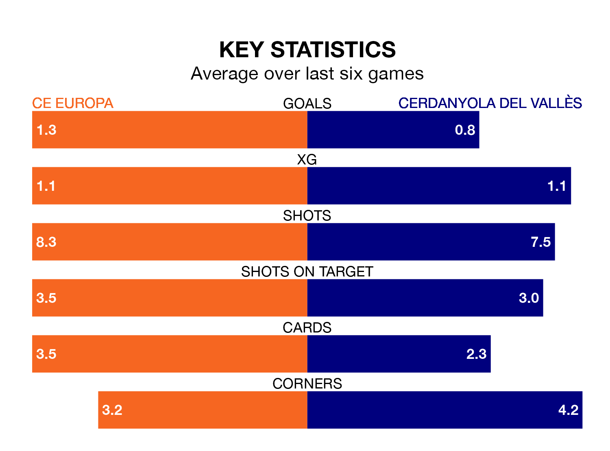

Mid-season relegation candidates Cerdanyola del Vallès face a challenge away against high-flying CE Europa on Sunday.
Cerdanyola del Vallès are 16th in the Segunda División RFEF Group 3 table, and have picked up five wins and seven draws in their 22 games to date.
CE Europa, meanwhile, are fourth in the standings with 41 points, having won 11 and drawn eight, and are one point behind table-toppers CF Badalona.
With 37 goals in 22 games so far this season, CE Europa are the league's joint-highest scorers with 1.7 goals per game. And they are conceding fewer than average, letting in 17 goals at a rate of 0.8 per game.
Cerdanyola del Vallès, meanwhile, are below average scorers, with 1.1 goals per game, compared to a league average of 1.2. They have conceded 1.5 goals per game.
In the last 10 years, CE Europa and Cerdanyola del Vallès have played each other on 10 occasions. CE Europa won six of them, Cerdanyola del Vallès three, and they drew once.
On average, CE Europa scored 2.1 goals and Cerdanyola del Vallès 1.4 in those matches.
Their last meeting was on October 8, when CE Europa won 2-1 away.
The home side are in mixed form in the Segunda División RFEF Group 3, with two wins and four draws from their last six games.
With a win and a draw over that period, the visitors' form is much worse – they have taken four points from 18, compared to CE Europa's 10.
CE Europa's last match was on February 11, a 1-1 draw against Penya Independent.
Cerdanyola del Vallès lost 1-0 against Valencia B last time out, also on February 11.
Updated: 13:30 (UTC), 12/02/24